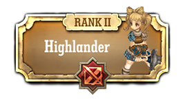

Classe Espadachim


Espadachins são guerreiros que têm fortes capacidades físicas.
Eles usam várias armas para lidar com os inimigos de perto e ficar na linha de frente.
Eles usam várias armas para lidar com os inimigos de perto e ficar na linha de frente.

Highlanders são lutadores duros que usam espadas de duas mãos.
eles fazem inimigos colidem uns contra os outros ou contra o terreno , por isso eles são ótimos para lidar com múltiplos inimigos
eles fazem inimigos colidem uns contra os outros ou contra o terreno , por isso eles são ótimos para lidar com múltiplos inimigos
Hoplites usam lanças com um alcance de ataque muito longo.
eles ganham um bônus ao lutar contra adversarios fortes, grandes inimigos de tamanho.
eles ganham um bônus ao lutar contra adversarios fortes, grandes inimigos de tamanho.
Rodeleros fazem emboscadas para inimigos demonlish.
usam habilidades defensivas usando escudos, são eficazes para bloquear ataques de longo alcance .
usam habilidades defensivas usando escudos, são eficazes para bloquear ataques de longo alcance .
Corsair são especializados em dual-wielding e emboscando inimigos por trás qualquer um que se junta a uma festa de Cordair torna-se um pirata.
A classe Fencer faz uso da arma florete para bater rapidamente greves sucessivas em seu inimigo.
Templários são a classe comandante que pode formar e gerenciar alianças.
Apenas as classes Templários podem ser os mestres de alianças e escolher o caminho a aliança poderia tomar.
Apenas as classes Templários podem ser os mestres de alianças e escolher o caminho a aliança poderia tomar.
Peltastas são guerreiros defensivos que usam escudos para bloquear ataques inimigos e provocar inimigos
Bárbaros são guerreiros imprudentes e agressivos que não estão vinculados às regras de batalha, e faria qualquer coisa para garantir a vitória.
Catafractário usam duas lanças nas mãos. eles agem como a cavalaria que minam e formações de dispersão inimigas.
Squires são guerreiros que apoiam seus aliados.
eles suportam por reparar e melhorar outros weapoins , ou através da criação de um acampamento base para ajudar a sua equipe.
eles suportam por reparar e melhorar outros weapoins , ou através da criação de um acampamento base para ajudar a sua equipe.
Doppelsoeldners são marcenarios que sofrem alto risco de altas recompensas. que perigosamente se expor aos inimigos de receber o poder de ataque alto ou alto EXP
Dragões são soldados armados de lanças de elite. Eles vão ganhar mais bônus se eles usam lanças de duas mãos em vez de uma mão .